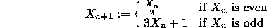

| Ackermann Functions |
An Ackermann function has the characteristic that the length of the sequence of numbers generated by the function cannot be computed directly from the input value. One particular integer Ackermann function is the following:

This Ackermann has the characteristic that it eventually converges on 1. A few examples follow in which the starting value is shown in square brackets followed by the sequence of values that are generated, followed by the length of the sequence in curly braces:
[10] 5 16 8 4 2 1 {6}
[13] 40 20 10 5 16 8 4 2 1 {9}
[14] 7 22 11 34 17 52 26 13 40 20 10 5 16 8 4 2 1 {17}
[19] 58 29 88 44 22 ... 2 1 {20}
[32] 16 8 4 2 1 {5}
[1] 4 2 1 {3}
Your program is to read in a series of pairs of values that represent the first and last numbers in a closed sequence. For each closed sequence pair determine which value generates the longest series of values before it converges to 1. The largest value in the sequence will not be larger than can be accomodated in a 32-bit Pascal LongInt or C long. The last pair of values will be 0, 0. The output from your program should be as follows:
Between L and H, V generates the longest sequence of S values.
Where:
L = the lower boundary value in the sequence
H = the upper boundary value in the sequence
V = the first value that generates the longest sequence, (if two or more values generate the longest sequence then only show the lower value) S = the length of the generated sequence.
In the event that two numbers in the interval should both produce equally long sequences, report the first.
1 20 35 55 0 0
Between 1 and 20, 18 generates the longest sequence of 20 values. Between 35 and 55, 54 generates the longest sequence of 112 values.